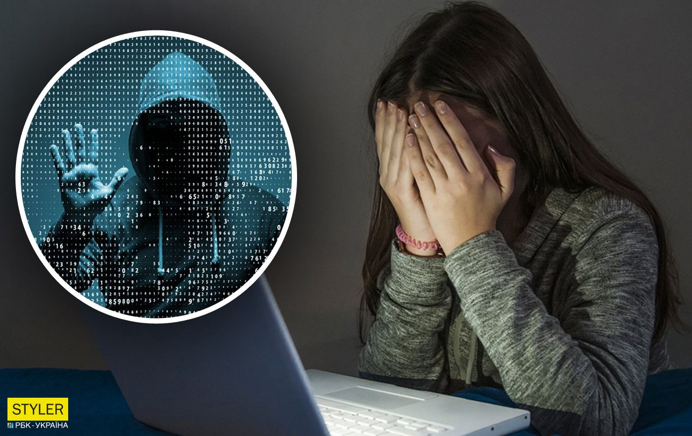

Навчальні матеріали
Вітаємо на сторінці, присвяченій основам інтернет-безпеки! У цьому розділі ми зібрали важливу інформацію, яка допоможе вам захистити свої персональні дані та уникати небезпек в Інтернеті. Дотримання правил безпеки в онлайн-просторі є важливим кроком до вашої цифрової безпеки.

1. Основи безпеки в Інтернеті
Інтернет став невід'ємною частиною нашого життя, але він також приносить ризики. Для того щоб безпечно користуватися Інтернетом, необхідно знати кілька основних правил:
- Не використовуйте однакові паролі для всіх акаунтів. Використовуйте складні паролі з цифр, літер та спеціальних символів. Не забувайте регулярно їх змінювати.
- Не діліться особистою інформацією. Уникайте публікації особистої інформації (адреси, телефону, номеру паспорта) у відкритих онлайн-просторах.
- Будьте обережні з фішинговими повідомленнями. Якщо отримали підозрілу електронну пошту або повідомлення, не відкривайте вкладення та не переходьте за посиланнями.
2. Способи взлому та методи захисту
Хакери використовують різні способи для того, щоб отримати доступ до особистої інформації користувачів. Ось найбільш популярні методи та способи захисту від них:
2.1. Фішинг (Phishing)
Фішинг — це метод шахрайства, коли зловмисники створюють підроблені вебсайти або електронні листи, які виглядають як офіційні, з метою отримати доступ до ваших особистих даних (наприклад, паролів чи банківських реквізитів).
- Як захиститись: Перевіряйте адреси вебсайтів, на яких вводите особисту інформацію. Не переходьте за сумнівними посиланнями в електронних листах.
- Як діяти: Якщо отримали підозрілий лист, не відкривайте вкладення і не клацайте на посилання. Звіряйте інформацію через офіційні канали.
2.2. Взлом паролів та словники
Взлом паролів через використання словників або брутфорс-атак (перевірка всіх можливих комбінацій символів) є одним з основних методів злому акаунтів. Якщо пароль простий, то його можна швидко зламати.
- Як захиститись: Використовуйте довгі та складні паролі, що включають великі та маленькі літери, цифри і спеціальні символи. Бажано використовувати фрази, а не окремі слова.
- Як діяти: Якщо ви підозрюєте, що ваш пароль був зламаний, змініть його негайно та активуйте двофакторну аутентифікацію (2FA).
2.3. Взлом через соціальні мережі
Хакери можуть використовувати інформацію, яку ви публікуєте в соціальних мережах, для того, щоб створити так звані "соціальні інженерії". Це метод маніпуляції людьми, щоб вони самі надавали доступ до своїх акаунтів або систем.
- Як захиститись: Будьте обережні з тим, що публікуєте в соціальних мережах. Не діліться особистою інформацією (адреси, дати народження, родинні зв’язки).
- Як діяти: Якщо отримали підозріле повідомлення від знайомих в соцмережах, перевірте його через інший канал зв’язку (наприклад, по телефону) перед тим, як виконати будь-які дії.
2.4. Шкідливе програмне забезпечення (Malware)
Шкідливі програми можуть потрапити на ваш комп'ютер через заражені файли, посилання чи вебсайти. Вони можуть викрадати ваші дані або навіть захоплювати контроль над вашим пристроєм.
- Як захиститись: Використовуйте антивірусні програми та регулярно оновлюйте їх. Уникайте завантаження файлів з неперевірених джерел.
- Як діяти: Якщо підозрюєте, що ваш комп’ютер інфікований, запустіть повний сканер антивірусу та перевірте всі файли.
2.5. Атаки через Wi-Fi
Якщо ви підключаєтесь до відкритих Wi-Fi мереж, зловмисники можуть перехопити ваші дані або виконати атаку "чоловік посередині" (Man-in-the-middle), коли вони можуть прослуховувати або змінювати ваше з'єднання.
- Як захиститись: Уникайте підключення до відкритих Wi-Fi мереж без пароля. Якщо це необхідно, використовуйте VPN для захисту вашого з’єднання.
- Як діяти: Завжди підключайтеся до перевірених мереж, і якщо це можливо, використовуйте мобільні дані замість Wi-Fi в громадських місцях.
3. Додаткові ресурси для вивчення інтернет-безпеки:
Для детального вивчення інтернет-безпеки вам також може бути корисно ознайомитися з іншими книгами та курсами, що спеціалізуються на темі захисту в онлайн-просторі.